배우기 전에 먼저 해 보세요. 틀려도 괜찮아요.
빵집에서 커피를 주문할 때 가장 알맞은 말은 무엇일까요?
möchten과 bitte를 쓰면 공손해요.
3,50 €는 어떻게 읽을까요?
Euro를 가운데에 넣어 읽어요.
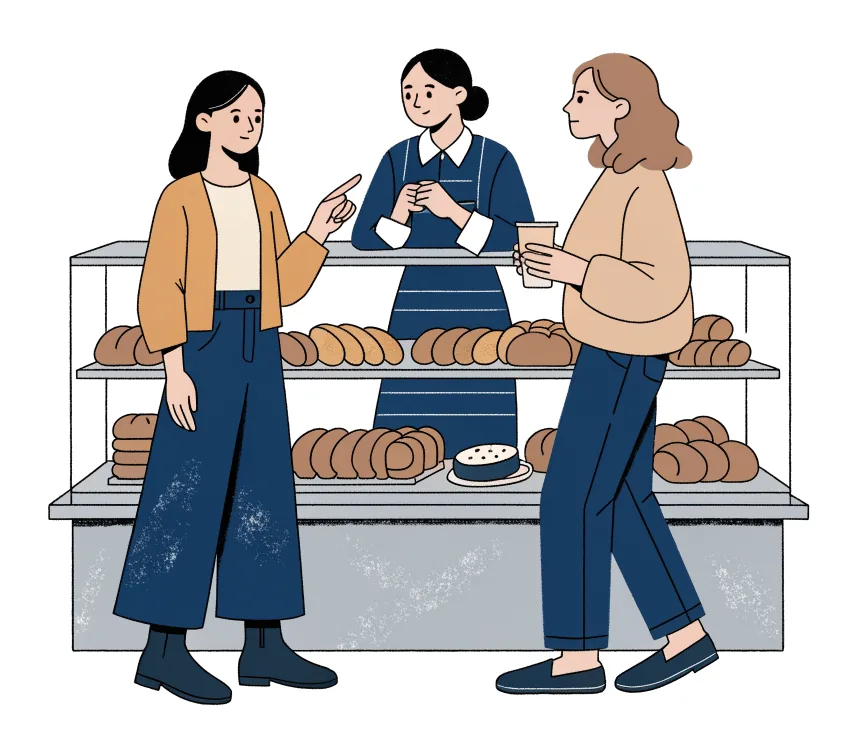
독일 생활은 장보기와 주문으로 시작해요. Jiu는 빵집에서, Sora는 장터에서, Dohyun은 회사 식당에서 먹을 것을 고르고 값을 치러요.
문법 der, das, die, ein, eine, kein, Akkusativ, möchten
과제 동료들 것까지 점심을 주문하고 계산하기
이 과를 마치면 빵집과 카페, 장터에서 원하는 것을 주문하고 값을 묻고 계산할 수 있어요.
이 과에서 쓸 말이에요. 눌러서 먼저 들어 보세요.
배우기 전에 먼저 해 보세요. 틀려도 괜찮아요.
빵집에서 커피를 주문할 때 가장 알맞은 말은 무엇일까요?
möchten과 bitte를 쓰면 공손해요.
3,50 €는 어떻게 읽을까요?
Euro를 가운데에 넣어 읽어요.
Lektion 3의 낱말 다섯 개를 다시 떠올려 보세요.
아침, 어학원 가는 길에 있는 빵집이에요. Jiu와 Lena가 아침거리를 사요.
들으면서 찾아보세요. 두 사람이 낸 돈은 모두 얼마인가요?
토요일 오전, 동네 장터예요. Sora가 과일과 채소를 사요.
들으면서 찾아보세요. 장터에 없는 것은 무엇인가요?
점심시간, 회사 식당이에요. Dohyun과 Markus가 먹을 것을 골라요.
들으면서 찾아보세요. Dohyun은 무엇을 마시나요?
세 대화를 듣고 답하세요.
Jiu는 빵집에서 무엇을 주문하나요?
Jiu möchte auch Kuchen.
Jiu는 Ich möchte keinen Kuchen.이라고 했어요.
빵집에서 두 사람이 낸 돈은 모두 얼마인가요?
장터에 없는 것은 무엇인가요?
Sora kauft ein Kilo Äpfel.
Sora는 토마토를 얼마나 사나요?
ein Pfund는 500그램이에요.
Dohyun은 오늘 무엇을 먹나요?
Dohyun trinkt einen Saft.
Dohyun은 물을 마셔요.
낱말 40개예요. 낱말이나 예문 앞의 단추를 누르면 소리가 나요. 명사는 der, die, das를 색으로 구분했어요.
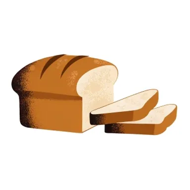
das Brot, die Brote 빵
Ich kaufe ein Brot.저는 빵을 하나 사요.
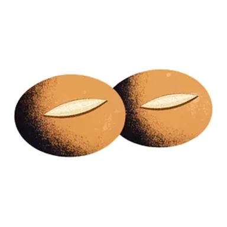
das Brötchen, die Brötchen 작은 빵
Lena nimmt zwei Brötchen.Lena는 작은 빵 두 개를 골라요.
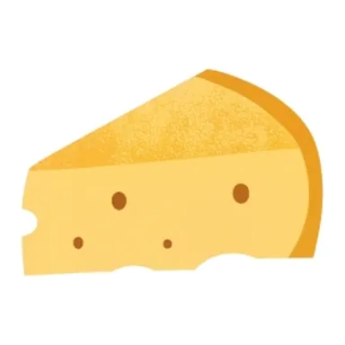
der Käse 치즈
Der Käse ist sehr gut.그 치즈는 아주 좋아요.
die Butter 버터
Wir haben keine Butter.버터가 없어요.
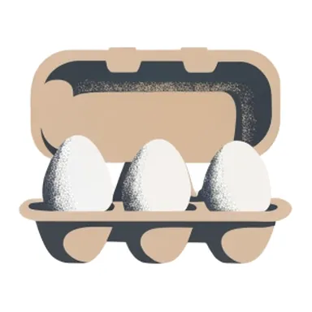
das Ei, die Eier 달걀
Ich brauche sechs Eier.달걀 여섯 개가 필요해요.
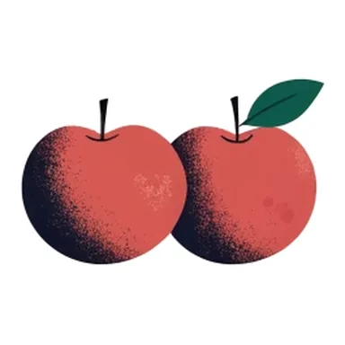
der Apfel, die Äpfel 사과
Ein Kilo Äpfel, bitte.사과 1킬로그램 주세요.
die Banane, die Bananen 바나나
Ich möchte drei Bananen.바나나 세 개 주세요.
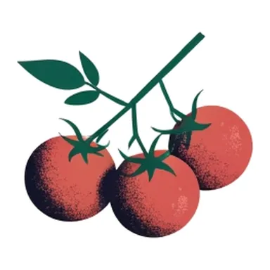
die Tomate, die Tomaten 토마토
Was kosten die Tomaten?토마토는 얼마예요?
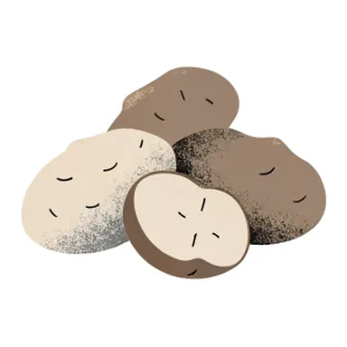
die Kartoffel, die Kartoffeln 감자
Ich esse Kartoffeln mit Butter.저는 감자에 버터를 곁들여 먹어요.
der Reis 쌀, 밥
Ich nehme den Fisch mit Reis.밥을 곁들인 생선으로 할게요.
das Fleisch 고기
Ich möchte heute kein Fleisch.오늘은 고기를 안 먹을래요.
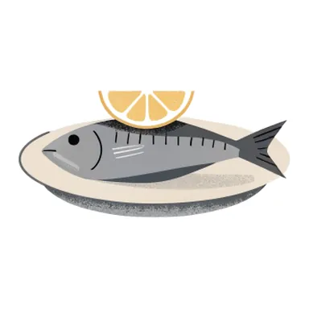
der Fisch, die Fische 생선
Der Fisch ist sehr gut.생선이 아주 맛있어요.
der Salat, die Salate 샐러드
Markus nimmt einen Salat.Markus는 샐러드를 골라요.
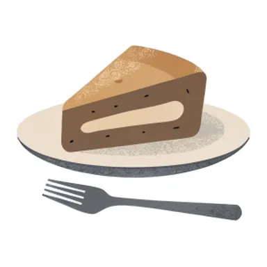
der Kuchen, die Kuchen 케이크
Möchten Sie ein Stück Kuchen?케이크 한 조각 드릴까요?
das Obst 과일
Sora kauft Obst.Sora는 과일을 사요.
das Gemüse 채소
Das Gemüse ist heute günstig.오늘 채소가 싸요.
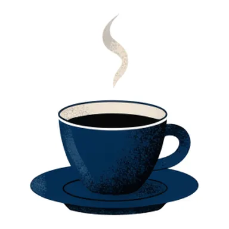
der Kaffee, die Kaffees 커피
Ich möchte einen Kaffee.커피 한 잔 주세요.
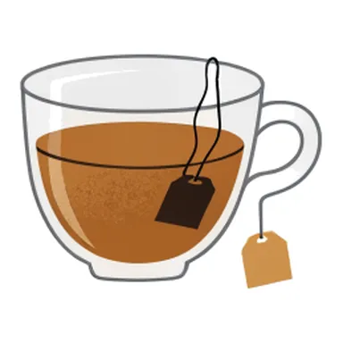
der Tee, die Tees 차
Lena nimmt einen Tee.Lena는 차를 골라요.
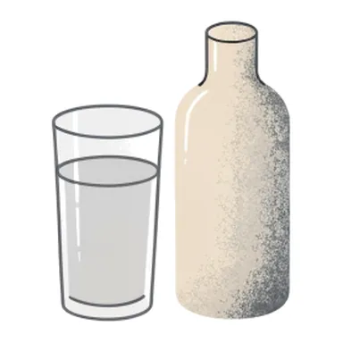
das Wasser 물
Ich trinke ein Wasser.저는 물을 마실게요.
der Saft, die Säfte 주스
Möchtest du einen Saft?주스 마실래요?
die Milch 우유
Ich trinke Kaffee mit Milch.저는 커피에 우유를 넣어 마셔요.
die Flasche, die Flaschen 병
Eine Flasche Wasser, bitte.물 한 병 주세요.
möchten 원하다, ~하고 싶다
Was möchten Sie?무엇을 드릴까요?
nehmen (du nimmst, er nimmt) 고르다, 주문해서 먹다
Ich nehme einen Tee.저는 차로 할게요.
kaufen 사다
Sora kauft Äpfel und Eier.Sora는 사과와 달걀을 사요.
brauchen 필요하다
Ich brauche ein Kilo Tomaten.토마토 1킬로그램이 필요해요.
kosten 값이 ~이다
Was kostet das?이거 얼마예요?
essen (du isst, er isst) 먹다
Ich esse heute keinen Fisch.저는 오늘 생선을 안 먹어요.
trinken 마시다
Was trinkst du?뭐 마실래요?
der Euro, die Euro 유로
Das kostet zwei Euro.2유로예요.
das Kilo, die Kilos 킬로그램
Ein Kilo kostet drei Euro.1킬로그램에 3유로예요.
das Gramm 그램
Ich nehme 200 Gramm Käse.치즈 200그램 주세요.
das Stück, die Stücke 조각, 개
Ein Stück Kuchen, bitte.케이크 한 조각 주세요.
der Supermarkt, die Supermärkte 슈퍼마켓
Der Supermarkt ist nicht teuer.그 슈퍼마켓은 비싸지 않아요.
die Bäckerei, die Bäckereien 빵집
Die Bäckerei hat Brot und Kuchen.그 빵집에는 빵과 케이크가 있어요.
der Markt, die Märkte 장터, 시장
Der Markt ist sehr schön.그 장터는 아주 좋아요.
teuer 비싼
Der Käse ist teuer.그 치즈는 비싸요.
günstig 값이 싼
Die Äpfel sind heute günstig.오늘 사과가 싸요.
heute 오늘
Heute möchte ich Fisch.오늘은 생선을 먹고 싶어요.
etwas 무언가
Möchten Sie noch etwas?더 필요한 것 있으세요?
이 과의 낱말로 여덟 문제를 풀어요.
줄을 누르면 소리가 나요. 가격은 쉼표로 적고, 읽을 때는 Euro를 가운데에 넣어요. 1유로보다 적으면 Cent만 말해요. 숫자 뒤에서 Euro, Kilo, Gramm, Stück은 복수로 바꾸지 않아요. zwei Euro, zwei Kilo Äpfel, drei Stück Kuchen이라고 해요.
규칙
독일어 명사에는 남성, 중성, 여성 세 가지 성이 있고 성마다 관사가 달라요. 처음 말하거나 '하나'를 뜻할 때는 ein, eine를 쓰고, 이미 아는 것을 가리킬 때는 der, das, die를 써요. 복수에는 ein이 없어요.
| der, das, die | ein, eine | kein, keine | |
|---|---|---|---|
| 남성 | der Tee | ein Tee | kein Tee |
| 중성 | das Brot | ein Brot | kein Brot |
| 여성 | die Tomate | eine Tomate | keine Tomate |
| 복수 | die Eier | Eier | keine Eier |
주의 명사의 성은 뜻만 보고 알 수 없어요. 그래서 관사와 함께 외워요. kein은 ein 앞에 k를 붙인 모양이고, '없다, 아니다'라는 뜻이에요.
규칙을 보고 바로 확인해 보세요.
처음 말하는 것이나 여럿 가운데 하나를 가리킬 때는 무엇을 쓰나요?
규칙
möchten, nehmen, haben, brauchen, kaufen, essen, trinken 뒤에 오는 '무엇을'은 Akkusativ(4격)로 써요. 남성만 der → den, ein → einen, kein → keinen으로 바뀌고, 중성과 여성, 복수는 그대로예요.
| 주어 자리 | 목적어 자리 | |
|---|---|---|
| 남성 | der, ein, kein Tee | den, einen, keinen Tee |
| 중성 | das, ein, kein Brot | das, ein, kein Brot |
| 여성 | die, eine, keine Tomate | die, eine, keine Tomate |
| 복수 | die, keine Eier | die, keine Eier |
주의 sein 뒤에서는 바뀌지 않아요. Das ist ein Kaffee.와 Ich möchte einen Kaffee.를 비교해 보세요. 3과에서 통째로 익힌 Ich habe einen Bruder.도 같은 규칙이에요.
규칙을 보고 바로 확인해 보세요.
목적어 자리에서 모양이 바뀌는 것은 어느 성의 관사인가요?
규칙
ein이 붙거나 관사 없이 쓰는 명사를 부정할 때는 kein을 써요. 동사나 형용사를 부정할 때는 2과에서 배운 nicht를 써요.
| 긍정 | 부정 |
|---|---|
| Ich möchte einen Tee. | Ich möchte keinen Tee. |
| Wir haben Eier. | Wir haben keine Eier. |
| Ich trinke Kaffee. | Ich trinke keinen Kaffee. |
| Das ist teuer. | Das ist nicht teuer. |
주의 nicht ein이라고 하지 않아요. Ich möchte nicht einen Kuchen.이 아니라 Ich möchte keinen Kuchen.이에요.
규칙을 보고 바로 확인해 보세요.
ein Brot를 부정하면 어떻게 되나요?
규칙
möchten은 가게와 식당에서 주문할 때 쓰는 공손한 말이에요. ich와 er, sie의 모양이 똑같이 möchte예요.
| möchten | |
|---|---|
| ich | möchte |
| du | möchtest |
| er, sie | möchte |
| wir | möchten |
| ihr | möchtet |
| sie, Sie | möchten |
주의 Ich will einen Kaffee.는 뜻은 통하지만 가게에서는 무례하게 들려요. 주문할 때는 Ich möchte …나 Ich nehme …를 쓰고 끝에 bitte를 붙여요.
규칙을 보고 바로 확인해 보세요.
ich가 주어일 때 möchten은 어떤 모양인가요?
가격을 듣고 알맞은 것을 고르세요.
얼마인가요?
Das macht drei Euro fünfzig.
사과 1킬로그램은 얼마인가요?
Ein Kilo Äpfel kostet zwei Euro neunundneunzig.
모두 얼마인가요?
Zusammen zwölf Euro vierzig, bitte.
커피는 얼마인가요?
Der Kaffee kostet zwei Euro achtzig.
주문을 듣고 알맞은 것을 고르세요.
Lena는 무엇을 주문하나요?
Ich nehme einen Tee und ein Stück Kuchen.
Dohyun이 원하는 것은 무엇인가요?
Ich möchte ein Wasser, aber keinen Kaffee.
Sora에게 필요한 것은 무엇인가요?
Ich brauche sechs Eier und ein Brot.
카페테리아의 가격표를 읽고, 맞으면 richtig, 틀리면 falsch를 고르세요. Preis는 가격이에요.
Cafeteria: Preise
| Preis | |
|---|---|
| Kaffee | 1,80 € |
| Tee | 1,50 € |
| Wasser | 1,20 € |
| Brötchen mit Käse | 2,40 € |
| Salat | 3,90 € |
| Apfelkuchen | 2,60 € |
Der Kaffee kostet 1,80 Euro.
Der Tee kostet 2,50 Euro.
차는 1,50유로예요.
Ein Brötchen mit Käse kostet 2,40 Euro.
Die Cafeteria hat keinen Kuchen.
Apfelkuchen이 있어요.
Ein Kaffee und ein Apfelkuchen kosten zusammen 4,40 Euro.
알맞은 관사를 고르세요.
Kaffee
Brot
Tomate
Käse
Ei
Milch
Apfel
Wasser
알맞은 관사를 고르세요.
Ich möchte Kaffee, bitte.
Lena nimmt Brötchen.
Sora kauft Flasche Wasser.
Ich nehme Fisch mit Reis.
Das ist Apfelkuchen.
Käse ist heute günstig.
kein, keine, keinen 가운데 알맞은 말을 고르세요.
Wir haben Tofu.
Ich möchte Brot.
Dohyun trinkt Milch.
Wir haben Eier.
Ich esse heute Fleisch.
kein과 nicht 가운데 알맞은 말을 고르세요.
Der Kuchen ist teuer.
Ich möchte Kuchen.
Sora arbeitet heute .
Wir haben Tomaten.
möchten의 알맞은 형태를 쓰세요.
Was Sie?
Ich einen Tee, bitte.
du auch ein Stück Kuchen?
Wir zwei Kaffee, bitte.
낱말을 순서대로 눌러 문장을 만드세요.
무엇을 드릴까요?
저는 차로 할게요.
두부는 없어요.
모두 얼마예요?
듣고 그대로 써 보세요.
Ich möchte einen Kaffee, bitte. 커피 한 잔 주세요.
Was kosten die Tomaten? 토마토는 얼마예요?
Ich nehme einen Salat. 저는 샐러드로 할게요.
Ich möchte einen Kaffee, bitte. 커피 한 잔 주세요.
Ich nehme ein Brötchen mit Käse. 치즈를 넣은 빵으로 할게요.
Einen Tee, bitte. 차 한 잔 주세요.
Was möchten Sie? / Was darf es sein? 무엇을 드릴까요?
Sonst noch etwas? 더 필요한 것 있으세요?
Für hier oder zum Mitnehmen? 드시고 가세요, 가져가세요?
Was kostet das? / Was kosten die Tomaten? 이거 얼마예요? / 토마토는 얼마예요?
Was macht das zusammen? 모두 얼마예요?
Bar oder mit Karte? 현금이에요, 카드예요?
Mit Karte, bitte. 카드로 할게요.
ein Kilo Äpfel 사과 1킬로그램
200 Gramm Käse 치즈 200그램
eine Flasche Wasser 물 한 병
ein Stück Kuchen 케이크 한 조각
Haben Sie Tofu? 두부 있어요?
Wir haben leider keinen Tofu. 아쉽지만 두부는 없어요.
Nein, danke. Das ist alles. 아니요, 괜찮아요. 그게 다예요.
mit Milch 우유를 넣어서
ohne Milch 우유 없이
대화 C에서 역할을 하나 고르세요. 상대의 말은 음성으로 나오고, 내 차례에는 직접 말해요.
Mein Einkaufszettel
이번 주에 살 것을 독일어로 적어 보세요. 다섯 가지 넘게, 양이나 개수도 함께 써요.
Ich brauche ein Brot, sechs Eier, ein Kilo Äpfel und 200 Gramm Käse. Ich kaufe auch eine Flasche Saft. Ich brauche keine Milch.
다 쓴 뒤에 확인해 보세요.
오늘은 내가 팀의 점심을 사러 왔어요. 동료들이 부탁한 것은 다음과 같아요.
Markus: ein Käsebrötchen, ein Kaffee
Frau Hoffmann: ein Salat, ein Wasser
내 것은 Käsebrötchen과 Wasser로 정했어요.
쪽지를 보고 세 사람 것을 주문하고 계산해요. 점원의 말을 듣고 소리 내어 답한 뒤 예시 답과 비교해요.
Guten Tag! Was darf es sein? 안녕하세요! 무엇을 드릴까요?
Guten Tag! Ich möchte zwei Käsebrötchen und einen Salat, bitte.
Gern. Möchten Sie auch etwas trinken? 네. 마실 것도 드릴까요?
Ja, einen Kaffee und zwei Wasser, bitte.
Sonst noch etwas? 더 필요한 것 있으세요?
Nein, danke. Das ist alles. Was macht das zusammen?
Das macht zusammen 16,30 Euro. Bar oder mit Karte? 모두 16유로 30센트입니다. 현금이에요, 카드예요?
Mit Karte, bitte.
Möchten Sie den Kassenbon? 영수증 드릴까요?
Ja, bitte. Vielen Dank! Auf Wiedersehen!
Ich kann Lebensmittel und Getränke nennen.먹을거리와 마실 것의 이름을 말할 수 있어요.
Ich kann nach Preisen fragen und Preise verstehen.값을 묻고 알아들을 수 있어요.
Ich kann im Café und in der Bäckerei bestellen.카페와 빵집에서 주문할 수 있어요.
Ich kann sagen, was ich nicht möchte.원하지 않는 것을 말할 수 있어요.